Overview
What is Snap to 3D?
Snap-to-3D is an end-to-end pipeline that turns a handful of casual smartphone photos of a real-world object into an editable, printable 3D mesh, combining classical computer vision and deep learning.
The goal is to make 3D asset creation accessible to anyone with a phone. Concrete applications:
- E-commerce — 3D product views from a quick photo session.
- Digital twins — capture physical assets for simulation or inventory.
- Cultural heritage — digitize objects for preservation and study.
- 3D printing — watertight meshes ready to slice and print.
The process
How it works
Input images follow two parallel branches — segmentation and reconstruction — which merge to isolate the object before the final meshing.
-
01
Capture
N photos of the object from different angles with a phone (JPG, PNG and HEIC/HEIF). The background is kept: it provides the geometric context reconstruction needs to estimate the cameras.
-
02
Segmentation + Reconstruction
In parallel: YOLO26-seg produces the object's binary mask and VGGT-Ω recovers camera poses, depth maps and a dense point cloud. The mask zeroes the confidence of background pixels and filters the cloud.
-
03
3D Mesh
PyMeshLab (Screened Poisson) turns the filtered cloud into a watertight mesh exported as .obj / .ply / .stl, ready for Blender, game engines or 3D printing.

The data
Dataset: VizWiz
The segmentation stage is trained on VizWiz Salient Object Detection, a dataset of photos taken by blind and low-vision users.
These are real-world mobile captures — noisy, with diverse lighting, cluttered backgrounds, motion blur and off-center framing — conditions much closer to what our pipeline must handle than a clean studio dataset.
Two traits shape the learning task: 68% of images carry
text overlaid on the salient object, and the object
usually occupies a large part of the frame.
Annotations are polygons of the object (one JSON per split) that
we rasterize into binary masks with cv2.fillPoly; we
use the official VizWiz SOD splits directly, without re-splitting.
| Split | Images |
|---|---|
| Train | 19,116 |
| Val | 6,105 |
| Test | 6,779 |
| Total | 32,000 |
Stage 1
Object segmentation
We iterated over three architectures until we found the right balance of mask quality and robustness.
1 · UNet from scratch. A classic encoder–decoder with skip connections, implemented from scratch and trained on VizWiz with BCE + Dice loss (0.3 / 0.7), the AdamW optimizer and BatchNorm between convolution and ReLU to stabilize training from zero. Results were not satisfactory: imprecise, unstable masks.
2 · U²-Net. The nested RSU blocks with deep supervision brought a dramatic improvement. The network produces 7 masks (one fused + 6 side outputs at different scales) and all of them are penalized during training: this gives a strong gradient to the intermediate layers and coherent multi-scale features. Much cleaner boundaries, though with residual errors.
3 · YOLO26-seg (final choice). Fine-tuning of Ultralytics' instance-segmentation model on VizWiz (a single class, salient object). Cleaner, more robust masks on our target images.
All three are trained at 512×512 with the same augmentation (flips, rotations, brightness/contrast, blur and noise) and with metric tracking in Weights & Biases, so the comparison is fair.
| Model | IoU | Dice | Precision * | Recall * |
|---|---|---|---|---|
| UNet (from scratch) | 0.62011 | 0.73052 | — | — |
| U²-Net | 0.7765 | 0.8397 | 0.8366 | 0.8987 |
| YOLO26-seg (fine-tuned) | 0.8866 | 0.9206 | 0.9057 | 0.9584 |
Pixel-level metrics on the official VizWiz SOD test split. YOLO26-seg wins on every metric (+0.110 IoU over U²-Net). Both models keep recall above precision: they slightly over-segment — the preferable failure mode for our use case.
* Precision and Recall are each measured at the model's own operating point (threshold 0.5 for UNet/U²-Net, confidence 0.25 for YOLO) and, for YOLO, after merging its per-instance masks into one foreground mask. They are indicative rather than measured at a matched operating point, and are more threshold-sensitive than IoU/Dice. A unified, threshold-matched evaluation (precision–recall curves) is left as future work.


The same three objects (mouse, tiles and cat), segmented by each model — the columns are aligned. Each model's failure mode shows: U²-Net gives softer masks and merges the two adjacent tiles into a single blob; YOLO26-seg separates each tile as an instance and delivers sharper edges. Both motivate the refinement step.
Mask refinement
YOLO occasionally adds spurious secondary detections; U²-Net produces soft boundaries with small holes. Refinement removes that noise before the mask filters the point cloud.
| Approach | What it does | Result |
|---|---|---|
| A — YOLO ∩ U²-Net (AND) | Pixel-wise intersection of both masks | Removes false positives, but erodes edges where the models disagree |
| B — U²-Net + opening | Saliency mask + morphological opening | Clean silhouette, but softer / less precise boundaries |
| C — YOLO + opening | Detection mask + morphological opening (elliptical kernel 21) + largest connected component | Selected — sharp boundaries, residual noise removed, object not eroded |
Morphological opening (erosion + dilation) removes small regions and thin bridges; then connected-component labeling (8-connectivity) keeps only the largest region per image: the object of interest.
What is a morphological opening? It is an erosion followed by a dilation with the same kernel. Erosion turns a pixel on only if the whole kernel fits inside the object, so it strips a thin border, deletes specks and cuts thin bridges. Dilation is the opposite and grows that border back. The net effect: the main object returns to its original size, but anything thinner than the kernel is erased for good.
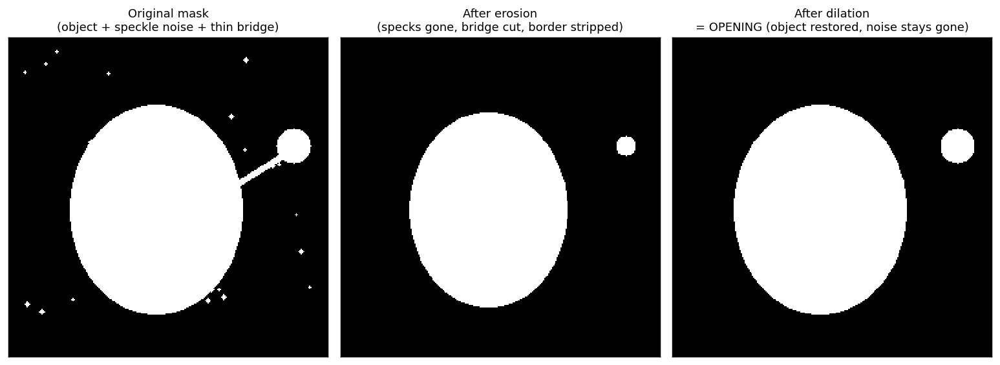
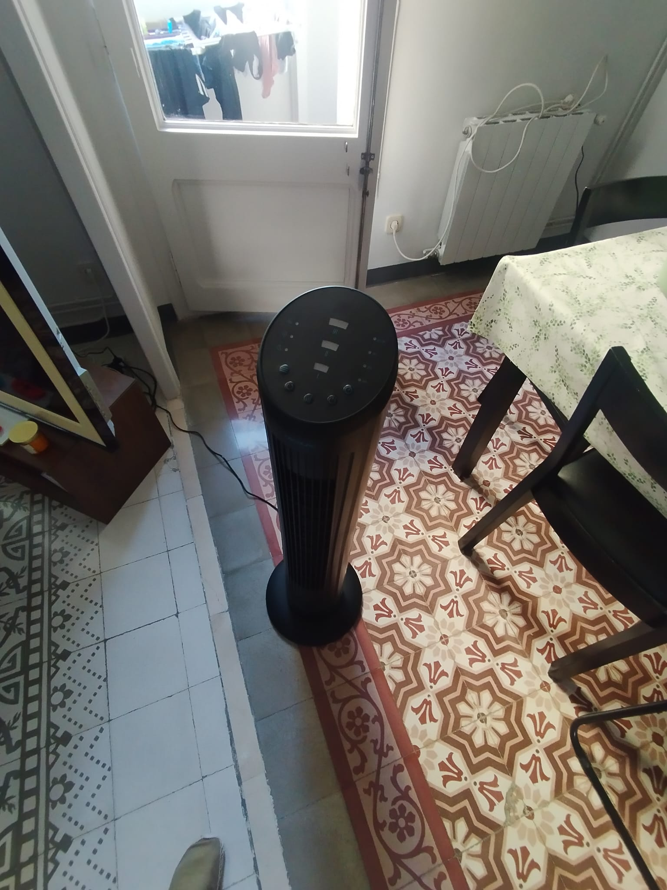
Original photo
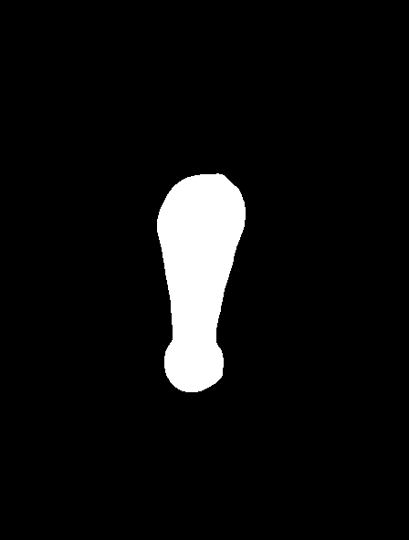
YOLO ∩ U²-Net
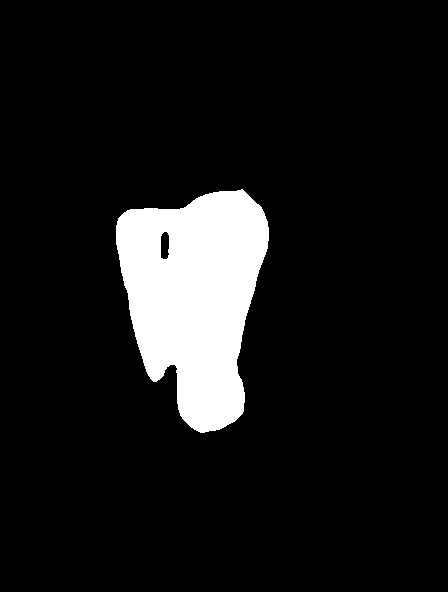
U²-Net + opening
YOLO + opening
The same fan under the three approaches. The chosen one is
C (--seg-checkpoint <yolo>.pt --morph-open --keep-largest):
sharp boundaries, residual noise removed and the object not eroded.
Stage 2
3D reconstruction with VGGT-Ω
For poses and geometry we use VGGT-Ω (CVPR 2026, VGG Oxford + Meta AI): a feed-forward transformer that recovers cameras and dense 3D in a single pass.
We chose it over COLMAP because incremental SfM is slow, brittle on sparse or textureless captures, and often fails on casual phone photos; VGGT-Ω stays robust even with very few views. From each view's depth, intrinsics and extrinsics, the maps are unprojected into a dense point cloud in world coordinates, filtered by confidence.
| # | Stage | Input | Output |
|---|---|---|---|
| 1 | Image tokenizer (DINOv3) | RGB images (N,3,H,W) | Patch tokens per image |
| 2 | Aggregator — alternating frame-wise and global attention | Patch tokens + camera/register tokens | Tokens with context shared across views |
| 3 | Camera head | Camera tokens | Extrinsics + intrinsics per view |
| 4 | Depth head | Aggregated features | Depth map + confidence per view |
| 5 | Unprojection (post-processing) | Depth + intrinsics + extrinsics | Confidence-filtered 3D point cloud |

Isolating the object
We don't crop the images or filter points in 3D — everything happens through the per-pixel depth confidence.
1 · Fuse mask and depth. Segmentation runs on the
same frames VGGT-Ω uses, so the binary mask M lines up
pixel-for-pixel with the depth D and its confidence
C. We simply multiply: C' = C * M, so every
background pixel ends up at 0. A depth-edge filter (removing stray
"flying pixels" at silhouettes) and a confidence percentile threshold
zero out more unreliable pixels on that same map. A point is kept only
where C' is above zero — so the background is gone.
2 · Unproject the object's depth. Each surviving
pixel (u, v) with depth d is back-projected
with the pinhole model using the view's intrinsics and extrinsics:
first to the camera frame
(x = (u−cx)/fx · d, y = (v−cy)/fy · d,
z = d), then to a shared world frame with the camera
pose. Doing this for every kept pixel of every view yields one fused,
coloured point cloud of the object — the views overlap because
VGGT-Ω already solved for a single shared geometry. Kept to the top
confidence percentile and capped at ≤300k points,
that cloud is what goes to the mesher.
From point cloud to mesh
Every method fits an implicit surface to the points and their normals and extracts it with Marching Cubes — what differs is how tightly that surface is pinned to the actual points.
Plain Poisson follows only the normals, so on few-view clouds the surface drifts off the data and either balloons outward or tears holes. Screened Poisson adds a term that also forces the surface through the points themselves, so it stays glued to the object — no drift, no holes, sharper detail. We run it with PyMeshLab (octree depth 9), keeping Open3D Poisson as a fallback; NKSR's learned neural kernel field was promising but not integrable in time.
| Method | Surface pinned to points | Outcome |
|---|---|---|
| Poisson (unscreened) | ✗ (normals only) | Drifts off the points → balloons or holes on few-view clouds; kept as baseline / fallback |
| NKSR | Learned kernels | Not integrable in time (expired wheels, source CUDA build) |
| PyMeshLab (Screened Poisson) | ✓ | Selected — glued to the object, sharp, watertight; clean & scriptable |
The full conversion conditions the cloud (confidence filter, outlier
removal, PCA + MST normals), runs Screened Poisson (octree depth 9),
then trims low-density vertices and cleans up before exporting a
watertight, colored .obj / .ply mesh.

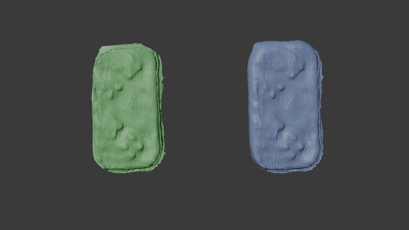
In action
Demo
The interactive VGGT-Ω viewer we used to inspect reconstructions, and the full two-branch pipeline run end-to-end on one real object.
The VGGT-Ω team hosts an interactive Gradio demo as a Hugging Face Space, which we used to inspect our reconstructions: you upload a handful of images, it runs a single forward pass on their GPU, and renders the result in the browser. The viewer shows both the dense, colored point cloud and the estimated cameras — one small frustum per input photo, placed at the exact position and orientation VGGT-Ω predicted, so you can trace the arc walked around the object. You can orbit, zoom and pan, filter points by depth confidence, cap their number, and toggle the cameras or background on/off.

The pipeline in action — one real object
Nine smartphone shots in, a watertight mesh out. Every frame below is
a genuine artifact of a single run (view 000 of the nine).
The nine views fan out into two parallel branches — VGGT-Ω depth and
Approach-C segmentation. They converge when the clean object mask
zeroes the depth confidence everywhere off the object
(C' = C · M); unprojecting the surviving pixels across all
nine views yields one colored point cloud, which PyMeshLab turns into
the final Blender-ready mesh.
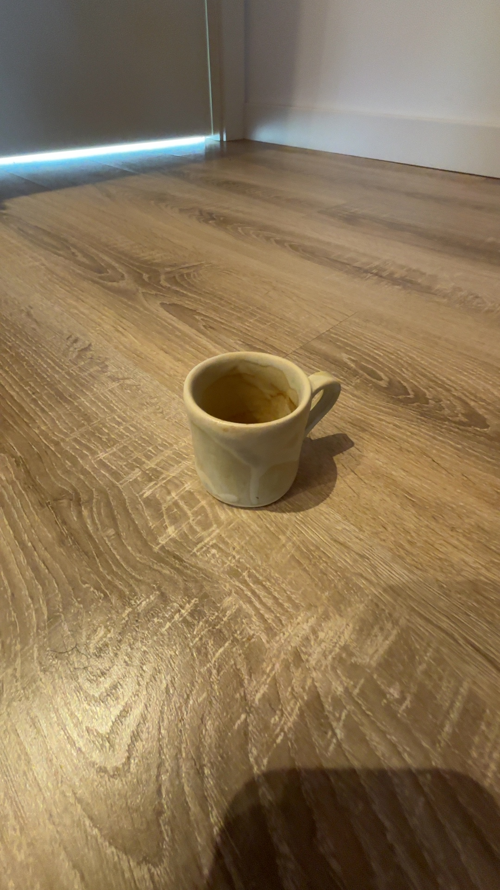
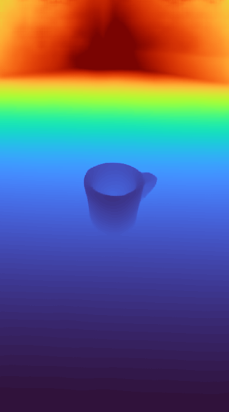
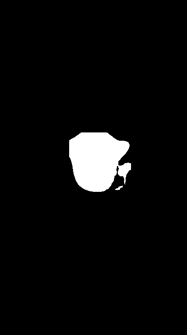
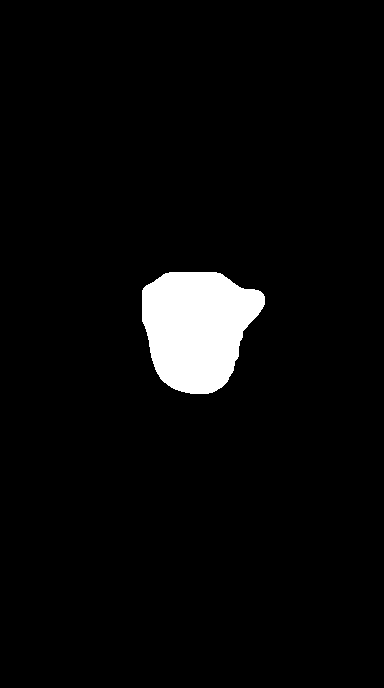
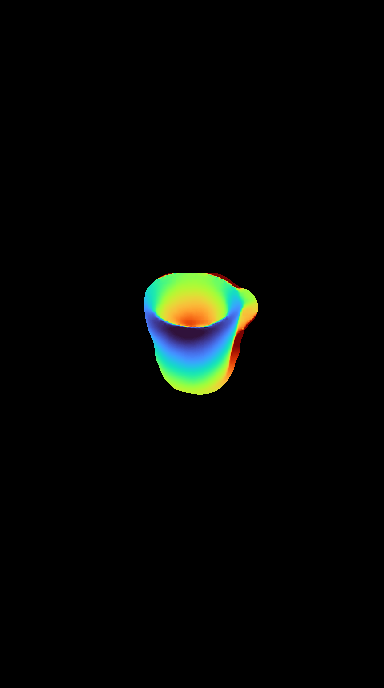
C' = C · M zeroes the confidence off the object.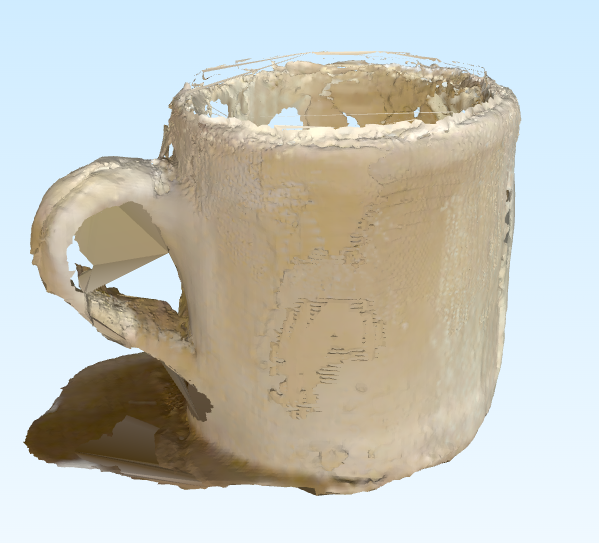
Under the hood
End-to-end system
The whole pipeline is served as an HTTP API (FastAPI) consumed by a mobile app: the user photographs the object and gets back the reconstructed 3D model.
VGGT-Ω inference and segmentation run in parallel
on the same images. The background is kept during reconstruction
(essential context for pose estimation) and the object is isolated
afterwards: the mask zeroes the confidence of background
pixels, filtering the reconstructed cloud before meshing. The service
returns the object as a point cloud or a watertight mesh
(.obj / .stl / .ply). Uploads
are limited to 32 images (25 MB each), inference is serialized
behind a lock (a single shared GPU), and the API responds with
503 on CPU-only hosts — VGGT-Ω needs a CUDA GPU.
| Method & path | Purpose |
|---|---|
| POST /api/v1/inference | Upload N images and run the pipeline; returns job metadata + download URLs |
| GET /api/v1/jobs/{job_id}/files/{path} | Download an artifact (mesh, point cloud, depth/mask PNG) |
| GET /api/v1/jobs/{job_id}/archive | Download all of a job's artifacts as a ZIP |
| GET /health | Device, CUDA and checkpoint status |
| GET /docs | Interactive Swagger UI |
Full spec in API_SPEC.md. Configuration via environment variables (checkpoints, device, output directory).
Mobile application
The API is consumed by a mobile client: the user photographs the object from several angles and gets back the reconstructed 3D model — all the heavy inference stays on the GPU server.
The multipart service decouples the app from the GPU: the client only uploads photos and receives a point cloud or a watertight mesh. The mobile app is developed in a separate repository, FE_APP_PP_AI. The same round trip — frontend → backend → frontend:
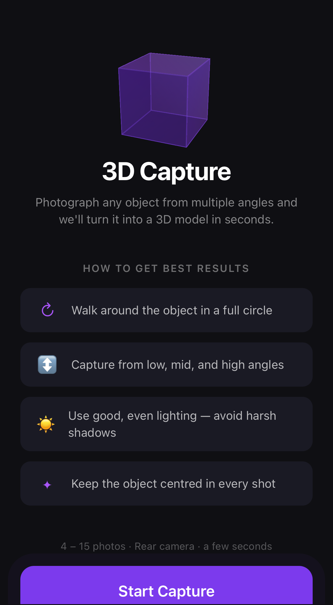
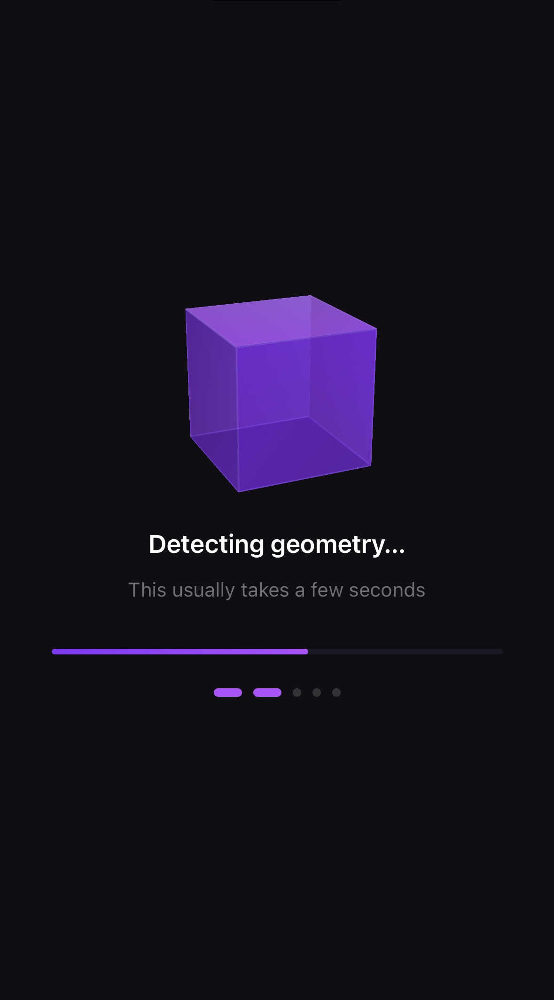
/api/v1/inference; the GPU server runs VGGT-Ω +
segmentation + meshing.
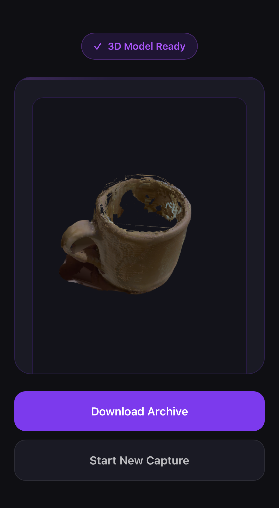
Key decisions at a glance
The choices that shaped the pipeline — and the reasoning behind each.
| Decision | Rationale |
|---|---|
| YOLO26-seg as the final segmenter | Better mask quality and inference than our own UNet/U²-Net; U²-Net kept as an alternative and for the mixed AND mode. |
| Approach C — YOLO + opening + keep-largest | Sharp boundaries with residual noise removed and the object not eroded (vs. AND-erosion or soft U²-Net edges). |
| VGGT-Ω over COLMAP / SfM | Feed-forward single pass, robust on a few casual phone photos; no iterative matching or bundle adjustment. |
Apply the mask through depth_conf |
Setting confidence to 0 on the background gives one filtering mechanism shared by mask, confidence and depth-edge filters; the mask travels inside the predictions. |
| Post-inference mask filtering, background kept for VGGT-Ω | The background is required context for pose estimation; the object is isolated only after reconstruction. |
| PyMeshLab (Screened Poisson) over Poisson / NKSR | Poisson artifacts on few-view clouds; NKSR not integrable (expired wheels, source build); PyMeshLab is clean and scriptable. |
| Multipart FastAPI service behind a single-GPU lock | Decouples the mobile app from the GPU server and serializes inference on shared hardware. |
Takeaways
Conclusions & future work
Simple baselines fell short — UNet from scratch and plain Poisson underperformed, and NKSR was not integrable. Each dead end sharpened the final design.
-
Done
Robust segmentation
YOLO26-seg fine-tuned on VizWiz + morphological opening + largest connected component (approach C).
-
Done
Feed-forward reconstruction
VGGT-Ω recovers cameras and a dense cloud in a single pass; the object is filtered via depth confidence.
-
Done
Reproducible meshing
PyMeshLab (Screened Poisson) produces watertight .obj/.ply/.stl meshes ready for Blender and printing.
-
Done
API + mobile app
Multipart FastAPI service consumed by the mobile client; all heavy inference stays on the GPU server.
-
Future
Unified segmentation metrics
Evaluate every model at a matched operating point (precision–recall curves / threshold sweep, consistent instance-mask merging) so Precision and Recall are directly comparable across UNet, U²-Net and YOLO — and log the missing UNet values.
-
Future
Learned meshing
Revisit methods like NKSR once the tooling matures (stable wheels and builds).
-
Future
Tighter mask–cloud fusion
Evaluate in-loop filtering during inference vs. the current post-inference filtering.
-
Future
Metric scale
Calibration for accurate dimensions, essential for precision 3D printing.
-
Future
Interactive latency
Optimization toward guided, interactive on-device capture.
Known limitations: quality depends on view coverage and object texture (few views leave holes on unseen faces); thin or reflective surfaces remain challenging; and segmentation is limited to the salient object, so heavily cluttered scenes can confuse it.